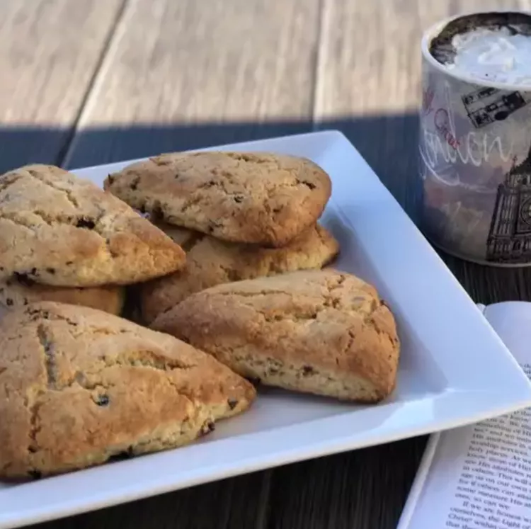

Scones

Description
The word "scone" can mean slightly different things depending on where you're located. American scones (like the ones this recipe makes!) are typically sweet, dense, and dry. They're usually triangular and can contain mix-ins like chocolate chips, berries, or nuts.
This bakery-worthy scone recipe is easy to make with basic ingredients you likely already have on hand.
Ingredients
- 2 cups all-purpose flour
- ⅓ cup sugar
- 1 teaspoon baking powder
- ½ teaspoon salt
- ¼ teaspoon baking soda
- 8 tablespoons unsalted butter, frozen
- ½ cup raisins (or dried currants)
- ½ cup sour cream
- 1 large egg
- 1 teaspoon white sugar
Steps
- Preheat the oven to 400 degrees F (200 degrees C);
adjust the oven rack to the lower-middle position.
Line a baking tray with parchment paper.
- Mix flour, 1/3 cup sugar, baking powder, salt, and
baking soda in a medium bowl. Grate butter into flour
mixture on the large holes of a box grater. Use your
fingers to work in butter until mixture resembles
coarse crumbs, then toss in raisins.
- Whisk sour cream and egg together in a small bowl
until combined.
- Stir sour cream mixture into flour mixture using a fork until large dough clumps form. Use your hands to shape dough into a ball. (Dough may seem dry at first but will come together as you work it.)
- Place dough on a lightly floured surface and pat into a 7- to 8-inch circle, about 3/4-inch thick. Sprinkle with remaining 1 teaspoon of sugar. Use a sharp knife to cut into 8 equal triangles; place on the prepared baking tray, about 1-inch apart.
- Bake scones in the preheated oven until golden, about 15 to 17 minutes. Cool for 5 minutes; serve warm or at room temperature.